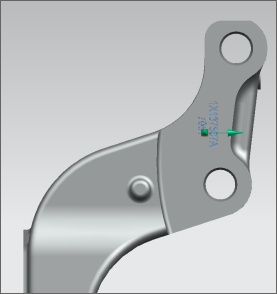

Set Scaling Method to Uniform Scale.
Set Scale to 40.00 and press Enter.
Set Aspect Ratio to 1.00 and press Enter.

In the Transparency group, set RGB Tolerance to 50 and press Enter.
This will refine the edges of the decal.